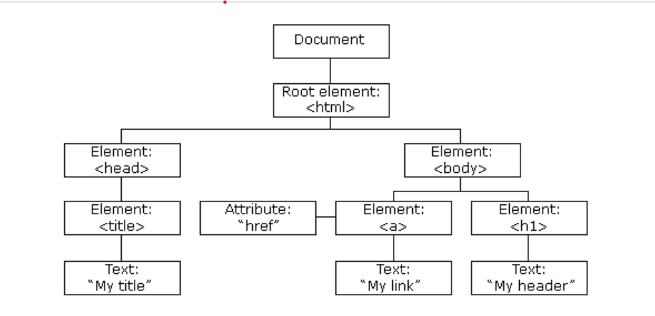

The HTML DOM (Document Object Model) When a web page is loaded,
the browser creates a Document Object Model of the page.
The HTML DOM model is constructed as a tree of Objects:

JavaScript can change all the HTML elements in the page.
JavaScript can change all the HTML attributes in the page.
JavaScript can change all the CSS styles in the page.
JavaScript can remove existing HTML elements and attributes.
JavaScript can add new HTML elements and attributes.
JavaScript can react to all existing HTML events in the page.
JavaScript can create new HTML events in the page.
The HTML DOM is a standard object model and programming interface for HTML. It defines:
The HTML elements as objects
The properties of all HTML elements
The methods to access all HTML elements
The events for all HTML elements
In other words: The HTML DOM is a standard for how to get, change, add, or delete HTML elements.